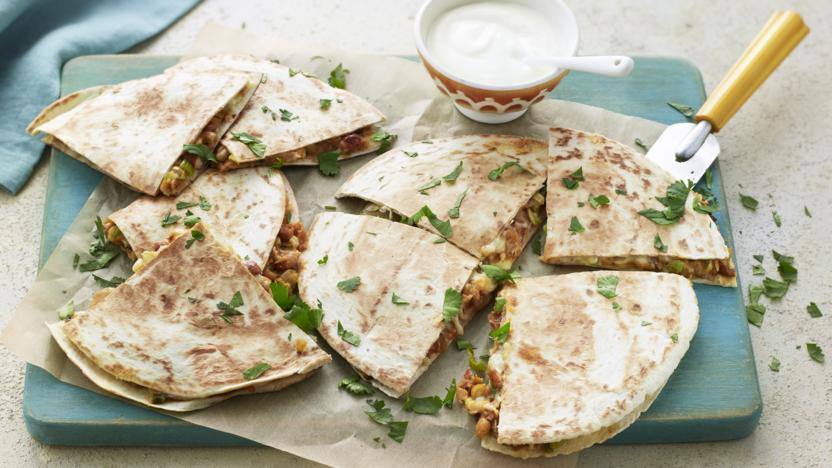

Quesadilla Recipe
Ingredients:
- 1½ tbsp olive oil
- 4 spring onions, thinly sliced
- 400g tin mixed beans in water, drained
- 1 1 tbsp chipotle paste
- 4 flour tortillas
- 1 lime
- handful fresh coriander, to garnish
Steps:
- Heat the oven to 120C/100C Fan/Gas ½.
-
Add half a tablespoon of the oil to the pan over a low heat and gently wipe
with a piece of kitchen paper. Put one tortilla in the pan and top with an even layer
of grated cheese. Spoon over half the bean mixture and top with another even layer of cheese
(the cheese acts as glue). Place a tortilla on top of the cheese, then press down with a spatula and
cook for 3–4 minutes, or until the underside is golden. Flip over the quesadilla and cook for a further 3–4 minutes.
-
Place on a baking tray and transfer to the oven to keep warm.
Repeat steps with the remaining ingredients
